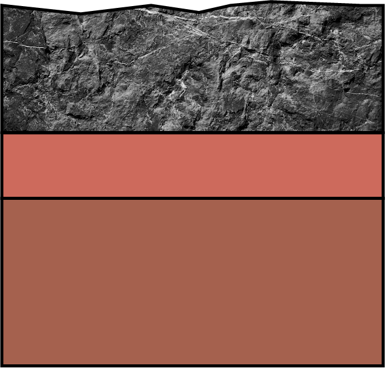

lithosphère continentale
lithosphère océanique
asthénosphère
volcanisme effusif
volcanisme explosif
Détection en cours...
L'une des plaques s'enfonce
sous l'autre (subduction),
formant une fosse océanique.
Cela peut créer une chaîne d'îles volcaniques.
Aucune des deux plaques ne s'enfonce,
elles se compressent et se soulèvent.
Cela donne naissance à de grandes
chaînes de montagnes.
La plaque océanique, plus dense,
plonge sous la plaque continentale,
provoquant la formation de volcans.
Du magma remonte et crée une nouvelle
"lithosphère océanique constituée de basalte".
La croûte s’amincit, se fissure
et forme un rift continental.
Ce rift peut à terme devenir
un océan si l’écartement se poursuit.
Ce point n'existe pas !
Un écartement est toujours associé
à une dorsale océanique qui constitue
des lithosphères océaniques de part et d'autre.
0.0s


Explorons ensemble les plaques tectoniques et leurs mouvements
TU
AS
5
SECONDES